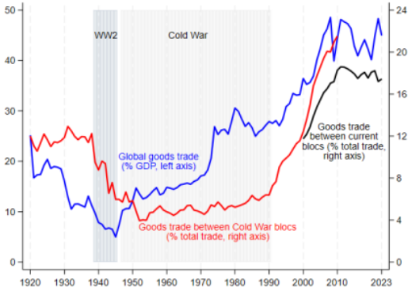
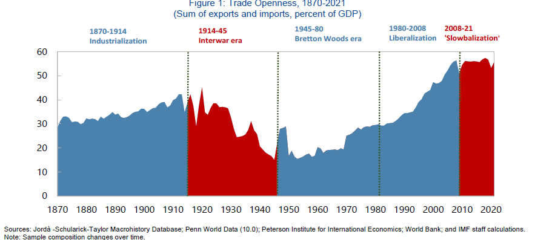
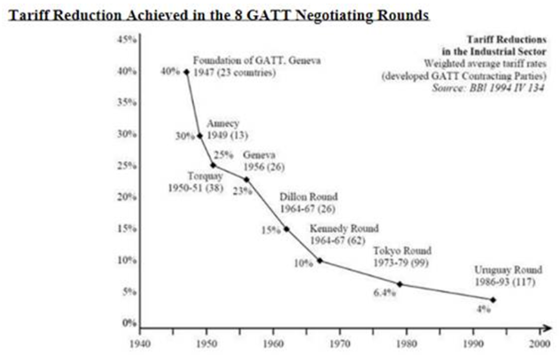
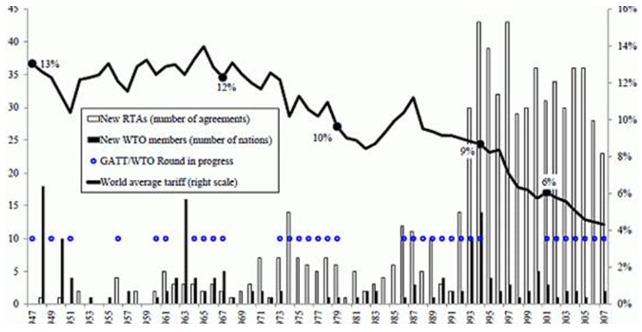
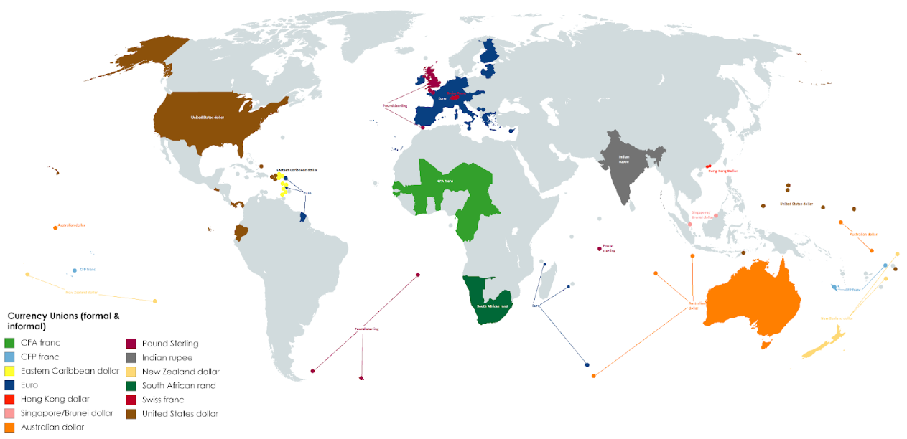
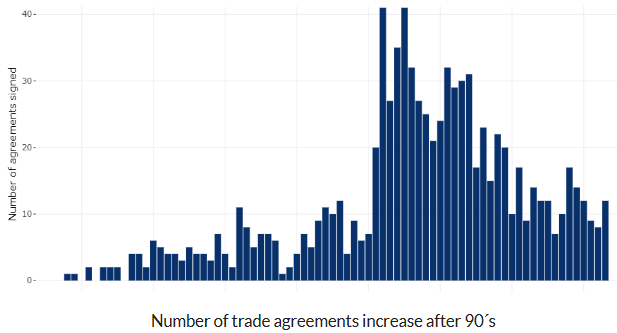
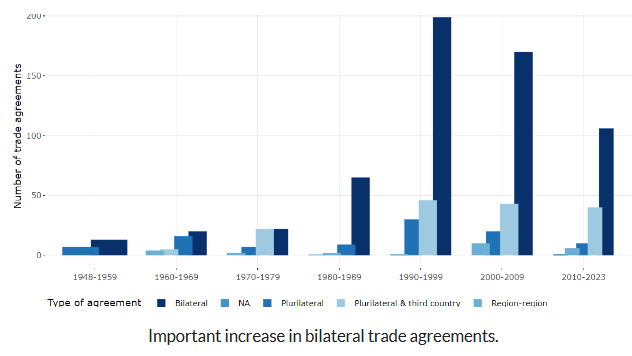
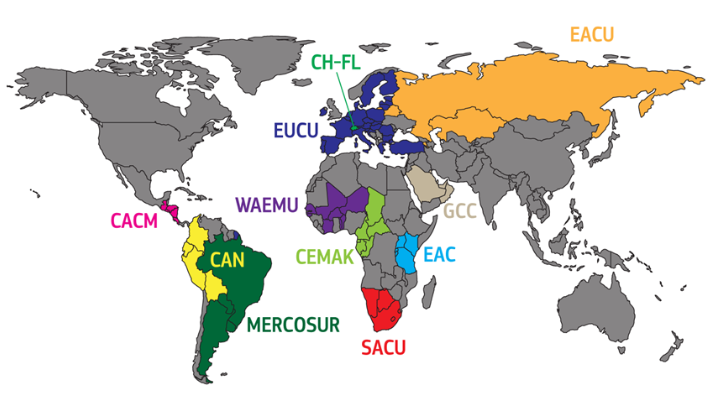
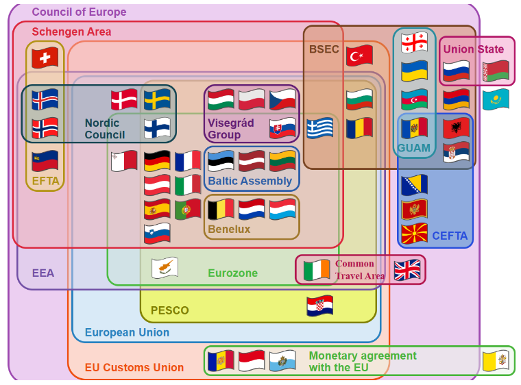

4. International Trade
Theory
Source: OECD Note:Trade is the sum of exports and imports of goods and services measured as a share of GDP.



FMI - Changing Global Linkages: A New Cold War?
Geoeconomic Fragmentation and the Future of Multilateralism
Motivation
Trade explained by different valuation of G&S derived of: taste, technology or production factors, firm characteristics...
Static benefits of trade
-
Specialization (different relative prices)
-
Change in production and consumption structure
Dynamic benefits of trade– Higher growth rate and welfare
-
Scale economies
-
Increase in competition -> efficiency, lower prices, variety, quality
-
Access to new technology
Consequences of trade
-
Increase in the production of G&S with greater comparative advantage and in the use of the productions factors in which the country is more intensive.
-
Change in consumption / increase in welfare.
Exporter prize (% increase over the non exporting firms)
Source: La empresa exportadora española: características, dinámica y estrategia competitiva
Theories
-
[Absolute advantage (Adam Smith) (1776). An Inquiry into the Nature and Causes of the Wealth of Nations] (https://archive.org/details/aninquiryintona00nichgoog/page/n22/mode/2up)
-
Comparative advantage (David Ricardo) David Ricardo's The Principles of Trade and Taxation (https://archive.org/details/aninquiryintona00nichgoog/page/n22/mode/2up)
-
Understand David Ricardo's principle of comparative advantage Britannica (https://www.britannica.com/video/186396/principle-advantage-David-Ricardo)
-
Comparative advantage Marginal Revolution University https://www.youtube.com/watch?v=4rUfoU04QJM / Comparative advantage2 MRU https://mru.org/courses/international-trade/comparative-advantage
-
Investopedia Video: Explaining Comparative Advantage Investopedia Video: Explaining Comparative Advantage https://www.youtube.com/watch?v=jNESLIbM8Ns
-
Comparative Advantage Kahn Ac. https://www.khanacademy.org/economics-finance-domain/ap-macroeconomics/basic-economics-concepts-macro/scarcity-and-growth/v/comparative-advantage-specialization-and-gains-from-trade / Ventaja comparativa Kahn Ac. https://es.khanacademy.org/economics-finance-domain/microeconomics/basic-economic-concepts-gen-micro/comparative-advantage-and-the-gains-from-trade/v/comparative-advantage-specialization-and-gains-from-trade
-
-
Relative factor endowments (Heckscher y Ohlin) Interregional and international trade, 1933 Vertical differentiation
Revealed Comparative Advantage Index
-
New theory of international trade (Krugman, Melitz) Horizontal differentiation Imperfect competition Economies of scale Monopolistic competition Product differentiation Tastes
Competitive advantage is a broader business concept that describes the attributes, resources, or strategies that enable a firm to outperform its competitors in the market. While comparative advantage focuses on the relative efficiency between countries (or sectors or firms) in producing goods, competitive advantage encompasses factors like innovation, quality, branding, and cost leadership that help a firm secure a superior position within its industry.
Indicators
Indicators
Indicators
| Indicator | Formula |
|---|---|
| Coverage rate (CR) | \(CR = \frac{X}{M} \times 100\) |
| Coefficient of Trade Openess | \(CTO = \frac{X + M}{GDP} \times 100\) |
| Trade Account Balance (TAB) | \(TAB = \frac{X_g - M_g}{GDP} \times 100\) |
| Current Account Balance (CAB) | \(CAB = \frac{X_{g\&s} - M_{g\&s}}{GDP} \times 100\) |
| Comparative advantage index | \(IVCR = \frac{X_i / X}{X_{iw} / X_w}\) |
| Relative trade balance (RTB) | \(RTB_i = \frac{X_i - M_i}{X_i + M_i} \times 100\) |
| Index of the contribution to the balance (ICB) | \(ICB_i = \left[\frac{X_i - M_i}{X_i + M_i} - \frac{\sum X_i - \sum M_i}{\sum X_i + \sum M_i}\right] \cdot \frac{X_i + M_i}{(\sum X_i + \sum M_i)/2} \times 100\) |
| Grubel y Lloyd (GL) Index of intraindustry trade | \( GL_i = \frac{X_i + M_i - \lvert X_i - M_i \rvert}{X_i + M_i} = 1 - \frac{\lvert X_i - M_i \rvert}{X_i + M_i}, \quad 0 \leq GL_i \leq 1 \) |
Economic integration
GATT general agreement on tariffs and trade (1947) OMC (164 countries)
A most-favored-nation (MFN) clause requires a country to provide any concessions, privileges, or immunities granted to one nation in a trade agreement to all other World Trade Organization member countries. Equal treatment
Exceptions - Integration agreements - Developing countries (tariff reductions to all developing countries)
Trade creation and trade diversion.


Economic integration Preferential agreements - non-reciprocal barrier reductions FTA – Reciprocal tariff reductions Nafta - USMCA Customs Union (CU) – common tariffs system Common Market (CM) = CU + free movement of capital and people Economic Union (EU) = CM + common economic policies Total integration = EU+ Monetary Union (common currency & fiscal union)
| Integration Level | Elimination of Tariffs and Restrictions | Common External Tariff | Free Movement of Services and Factors | Harmonization of Economic Policies | Unification of Policies and Common Institutions |
|---|---|---|---|---|---|
| Free Trade Area | |||||
| Customs Union | |||||
| Common Market | |||||
| Economic Union | |||||
| Total Integration |
-
Trade Creation: Trade creation happens when the customs union causes a member country to replace a relatively high-cost domestic producer with a lower-cost producer from within the union.
-
Trade Diversion: Trade diversion occurs when the customs union causes the home country to switch from buying a cheaper good from a non-member to a more expensive good from a member, simply because the latter now faces no tariff while the former still does.



Trade aggreements
- Southern African Development Community (SADC)
- Common Market for Eastern and Southern Africa (COMESA)
- Economic Community of West African States (ECOWAS)
- Central African Economic and Monetary Community (CEMAC)
- West African Economic and Monetary Union (WAEMU)
- European Union (EU)
- North American Free Trade Agreement (NAFTA)
- Association of Southeast Asian Nations (ASEAN)
- Comunidad andina (CAN)

Customs unions
- Andean Community (CAN)
- Caribbean Community (CARICOM)
- Central American Common Market (CACM)
- East African Community (EAC)
- Economic and Monetary Community of Central Africa (CEMAC)
- Eurasian Customs Union (EACU)
- European Union Customs Union (EUCU; EU–Monaco; EU-Andorra; EU-San Marino; EU-Turkey)
- Common Market for Eastern and Southern Africa (COMESA)
- Gulf Cooperation Council (GCC)
- Israel–Palestinian Authority
- Southern Common Market (MERCOSUR)
- Southern African Customs Union (SACU)
- Switzerland–Liechtenstein (CH-FL)
- West African Economic and Monetary Union (WAEMU)

Trade barriers Beneficiaries- small groups Reason - Nascent industry ( infant industries) - Strategic sectors
Data
Glossary
Exercise
References
Globalisation and Economic Growth: A Historical Perspective. Nicholas Crafts